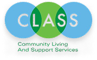

A tool that supports overworked staff who work with individuals recovering from traumatic brain injuries
For my HCI capstone project, I partnered with CLASS alongside a team of 4 other students. CLASS is a nonprofit in Pittsburgh, PA, that runs a Structured Day Program for individuals with TBI.
I worked on designing a solution that reduces staff burden by consolidating participant information, empowering participants to engage with their goals and activities, and ensuring accessibility for a wide range of cognitive abilities.
